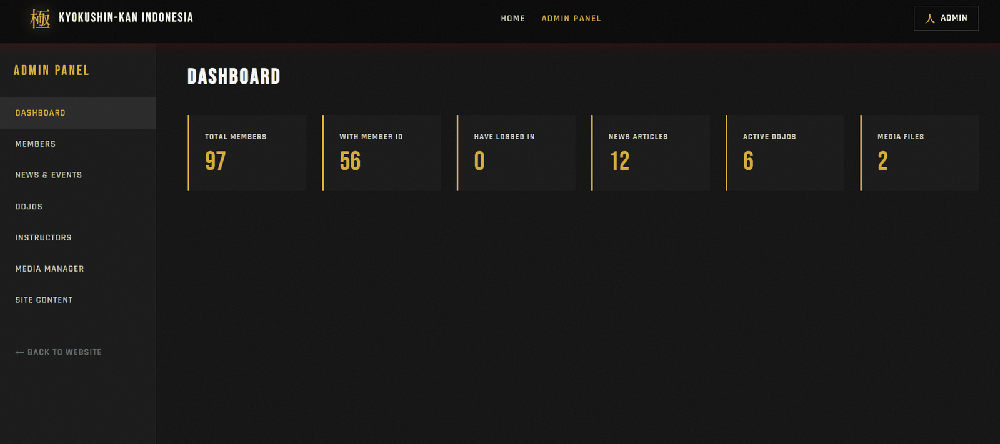

Case study · Client work
Kyokushin-kan Indonesia
A public site and member management back office for a national karate organisation — and a lesson in building for hosting you don’t control.
- Role
- Sole developer
- Stack
- Flask & SQLite, then PHP & MySQL
- Focus
- Security, deployment
- Replaces
- An older Bootstrap site
The brief
Kyokushin-kan Indonesia is a national karate organisation with dojos across the country. They needed a public presence — news, dojo directory, instructor profiles, gallery — and behind it, somewhere to manage members and publish content without going through a developer every time.
The site it replaced was an older Bootstrap build. Not broken, but static: every content change meant editing HTML.

What I built
A Flask application with a SQLite store, split into a public surface and an authenticated one:
- Public — news, dojo directory, media by section
- Members — login, session, password change, member search and counts
- Admin — a content management panel behind its own gate

Taking the security seriously
This site holds a membership list for a real organisation. That’s personal data belonging to people who never agreed to be part of a student project, so it got treated accordingly.
| Measure | Why |
|---|---|
| Per-request CSP nonces | A content security policy with a fresh nonce each request, rather than the usual escape hatch of allowing all inline script — which would defeat the point of having one |
| Rate-limited authentication | Login is the endpoint worth brute-forcing; it’s throttled by IP |
| IP-gated admin panel | The admin surface isn’t reachable at all from an unexpected address, before authentication is even considered |
| Proxy-aware client IP | Behind cPanel’s reverse proxy, the naive client address is the proxy’s — which would have made both of the above useless |
| Role decorators | Login and admin requirements applied at the route, so a new endpoint has to opt out of protection rather than opt in |
| Upload allowlist | Extensions checked against a list of what’s permitted, not a list of what isn’t |
| Secrets from environment | Signing key and initial passwords read from config, never committed |
The one that taught me something. The rate limiter and the admin IP gate both looked fine locally and were both effectively disabled the first time I deployed, because behind a reverse proxy every request appears to come from the proxy. Two separate protections, one shared assumption, and no error to tell me — they just silently stopped doing anything. I now check how client IP resolves as a deployment step rather than trusting it.
Then the hosting didn’t cooperate
The client’s shared hosting couldn’t reliably run a Python application. Indonesian shared hosting is overwhelmingly PHP and MySQL; Python needs Passenger support that isn’t always there and isn’t always dependable when it is.
So I built it again in PHP, keeping the same structure: a library layer for authentication, database access, content, and helpers; a separate page layer for views; schema and seed data as versioned SQL files.
Rewriting a working application because of an infrastructure constraint is not a satisfying afternoon. But the alternative — asking a volunteer-run organisation to pay for hosting they don’t need so my stack choice could survive — would have been the wrong call. The constraint was real and it wasn’t theirs to absorb.
Shipping it properly
I wrote a deployment runbook, because I was not going to be the person clicking through cPanel
in a year’s time. It covers the Python application setup, the entry point configuration,
an .htaccess rule denying web access to the environment file, correct static file
permissions, and where to find the error log when it breaks.
It also documents the small things that cost me an hour each and would cost the next person the same: hidden files don’t upload unless you turn on hidden-file display first, and the development database has to be deleted before upload or the seeded passwords never regenerate from the environment config.
What I’d do differently. Two codebases in two languages is a maintenance burden I created and would now avoid — I should have confirmed the hosting constraints before writing the first line, not after. I’d also test the authentication and rate-limiting logic; it’s the part where a bug does real damage and the part I verified by hand.